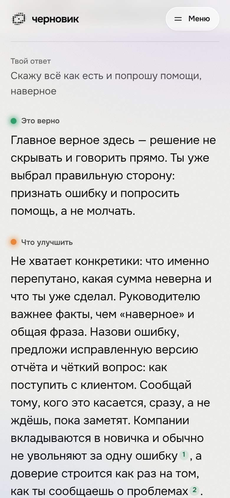

90% → ⅓
Почти 90% выпускников уверены, что умеют работать в команде и брать ответственность. Согласна с ними треть работодателей.
hh.ru, Career.ru
03 · Тренажёр-экзаменатор



08 · Адаптивность и аналитика
Карта прогресса: размытая точка — зона, где ответы пока плавают.


09 · Голос и экспорт